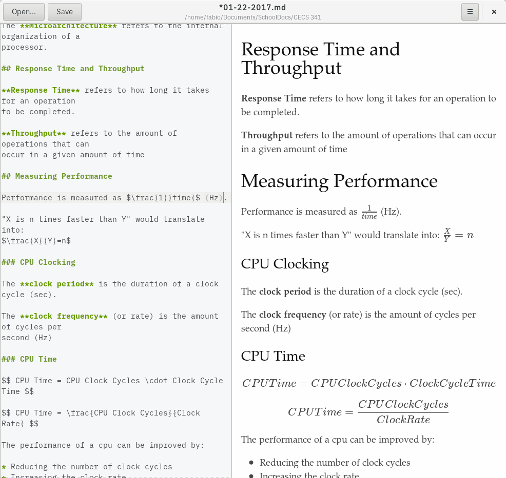

Marker is a simple yet robust markdown editor for the linux desktop.
The primary goal of Marker is to provide a powerful document editing experience, without making assumptions about the workflow of the user. Marker's base configuration is very simple, but it can be customized to meet the needs of any workflow!

Install Marker on FlatHub!
Marker is also available in the Arch User Repositories.
If you prefer to do things yourself, you can compile a release tarball from GitHub.
Learn about the markdown format using the CommonMark reference. There is also an interactive tutorial for you to try there.
Learn about the additional features introduced in Scidown: Scidown wiki
Marker supports typesetting formulae using either \(\KaTeX\) or MathJax. By default, \(\KaTeX\) is selected.
Learn how to add beautiful math formulas to your markdown documents using \(\KaTeX\):
\(\KaTeX\) supports many \(\TeX\)/\(\LaTeX\) commands.
Learn how to add flowcharts, sequence diagrams, and gantt diagrams to your markdown documents using Mermaid.
Learn how to seamlessly create line graphs, bar graphs, and scatter plots in markdown using Charter. There is also a page about Charteron the Scidown wiki.
Marker is developed in the open on GitHub; It's very easy to get involved and help us improve the project!
Is there a nasty bug that you keep experiencing, or a feature you want us to add?
You can submit an issue on our GitHub issue tracker.
If you have programming experience, feel free to patch issues, and submit pull requests!